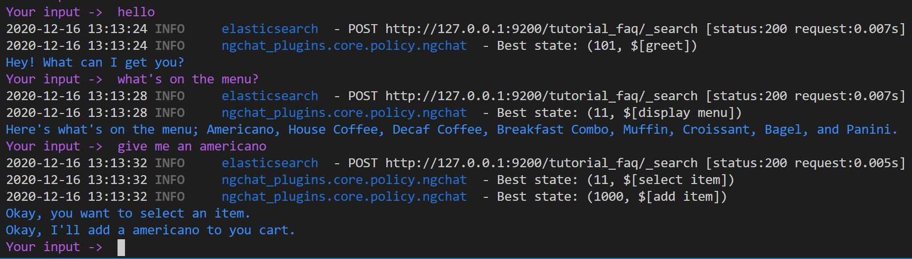
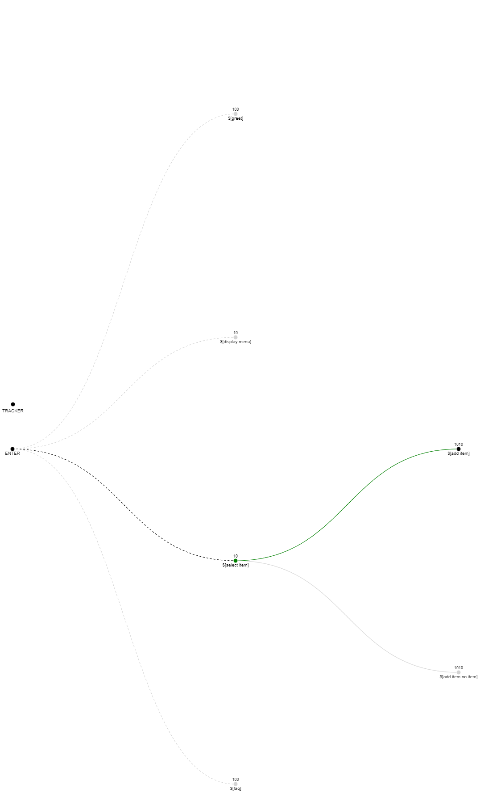

SeaChat Policy Tutorial
Once the bot is initialized and is provided with intents, entities, and training data, it is time to set up the dialogue manager. For this demonstration, we will be replacing the Rasa policies entirely with SeaChat Policy.
Table of Contents
Configuration
The Rasa initialized bot will come with a policy configuration like this:
# Configuration for Rasa Core.
# https://rasa.com/docs/rasa/core/policies/
policies:
- name: TEDPolicy
max_history: 5
epochs: 100
- name: RulePolicy
In config.yml we will remove all of the policies, and add the SeaChat Policy.
policies:
- name: seachat_plugins.core.policy.ngchat.ngChatPolicy
nlu_threshold: .20
use_mr: true
mr_threshold: .40
mr_text_path: ./data/gm_reviews.txt
dialogue_path: ./dialogue.yml
Important
The name paramater should be a path to the ngChatPolicy class
In this configuration you can also specify the nlu_threshold, which controls when the bot will default to the fallback action dependent on the NLU confidence, and the dialogue_path which should point to a file in your bot directory called dialogue.yml. If the bot uses the machine reading reviews system, you need to set use_mr to true. You can then specify the mr_threshold, which controls when the bot will default to the machine reading response, and the mr_text_path, which points to the file in your bot directory that contains the data for the machine reading system. As a note, the machine reading reviews system only works with Rasa 2x+.
- Defaults:
nlu_threshold:.4use_mr:falsemr_threshold:.4mr_text_path:./data/gm_reviews.txtdialogue_path:./dialogue.yml
Tip
After removing the TEDPolicy from the configuration file, Rasa will no longer need the stories.md file for training. You can keep the stories.md file for testing purposes or you can remove most of the content. If you delete the file altogether, you may get an error from Rasa. Instead of removing the file entirely, you can just remove all the stories except one simple one; this way Rasa can still find a correctly-formatted stories file and will not throw an error.
Creating the Dialogue File
In order to control the flow of dialogue, we will need to create a set of dialogue states.
Each state contains enter conditions (expressions that must evaluate true, such as the user’s intent, slot status, etc) and a set of bot actions that will be executed if the state is entered.
At each point that the bot must make a decision, it will evaulate all the states and assign each state with a score; the highest scoring state will have its actions executed by the bot.
See the policy overview for more information about the state format. Create a new file in your bot folder called dialogue.yml.
A Simple State Example
We can use the NLU data that Rasa provided at initialization to set up our first state. In our domain and data we have a greet intent. If the user provides an utterance with intent greet, the bot should respond with a response from the utter_greet template provided in the domain. This is the basis of our ‘if/then’ state conditions and actions.
$[greet]:
conditions:
- INTENT.name == 'greet'
actions:
- utter_greet
Important
At the end of our actions list, we must also include an action_listen event, or else the bot will not stop to recieve user input, and could end up in an endless loop.
Note
We use the $[] notation to mark state names. The format is not required, but suggested as it helps the unique state names stand out in the dialogue file.
Additionally, since the bot should always respond with utter_greet, we can include a high rank score to make sure this state is chosen if there are several enterable states.
$[greet]:
rank_score: 100
conditions:
- INTENT.name == 'greet'
actions:
- utter_greet
- action_listen
Note
At this point, you can train a new model and confirm that your first state is working as expected. You can also try a very different utterance to confirm that the bot will default to the fallback utterance. In order for the fallback to respond with an utterance, you will need to add a utter_default template to the domain.yml file.
A More Complex Example
For this tutorial, we want our bot to be able to greet the user, display the menu, and add a requested item to the cart. In the cart tutorial, we will go over how to integrate SeaChat Cart through custom actions. For now, we just work on controlling to dialogue flow and will use response templates only, until we create the custom actions in the cart tutorial.
For these two tasks (querying the menu and selecting an item), we will need to break down the possible user utterances into intents and entities. We can create two new intents, display_menu and select_item, to represent the users desire to execute one of these two events. Add these to the intents list on the domain.yml file. See Rasa docs for a review of intents if necessary.
intents:
- display_menu
- select_item
For the select_item intent, we can also expect the user to specify which item they want. We will want to extract this with as an entity, and store it as a slot so that the bot can work with it in the actions. Add item as both and entity and a slot to the domain.
See Rasa docs for a review of slots if necessary. Note that the influence_conversation attribute of on a slot will not influence the behavior of the bot if you are not using Rasa’s TEDPolicy.
entities:
- item
slots:
item
type: text
Now that we have identified what can be extracted, we will need to add some training data for these intents. Add some Rasa training examples to the data/nlu.md file.
nlu:
- intent: display_menu
examples: |
- show me the menu
- what's on the menu?
- can I see the menu?
- Show me what's on the menu?
- display the menu please
- intent: select_item
examples: |
- I want an [Americano](item)
- give me a [breakfast pastry combo](item)
- I'll have a [panini](item)
- i'd like a [house coffee](item)
- get me a [decaf coffee](item)
- i also want a [muffin](item)
- gimme a [croissant](item)
- i'd also like a [bagel](item)
- i'll order a [turkey bacon panini](item)
- i want to order a [ham panini](item)
For now, while we don’t have the actions set up, let’s create some response templates that the bot can display for these intents. In the domain add the following the to responses:
utter_display_menu:
- text: Here's what's on the menu; Americano, House Coffee, Decaf Coffee, Breakfast Combo, Muffin, Croissant, Bagel, and Panini.
utter_select_item:
- text: Okay, I'll add a {item} to you cart.
Now we have all the pieces to create the new dialogue states. Let’s create a dialogue state for display_menu, which will respond with utter_display_menu if the user gives the intent display_menu.
$[display menu]:
conditions:
- INTENT.name == 'display_menu'
actions:
- utter_display_menu
- action_listen
And, we can create a state for select_item, which will respond with utter_select_item.
$[select item]:
conditions:
- INTENT.name == 'select_item'
actions:
- utter_select_item
- action_listen
However, we may want to handle a case where the user says they want to select an item, but they either don’t provide an item name or the item isn’t present on the menu. In this case, we want to confirm that they want to select and item, and then provide a specific response based on whether or not there is a valid item.
Let’s first fix our response utterances:
responses:
utter_select_item:
- text: Okay, you want to select an item.
utter_added_item:
- text: Okay, I'll add a {item} to you cart.
utter_no_item_selected:
- text: You didn't specify what item you want.
Next, we can add two connections to our dialogue state to handle the two dialogue path choices.
$[select item]:
conditions:
- INTENT.name == 'select_item'
actions:
- utter_select_item
connections:
- $[add item]:
direct_connection: true
conditions:
- SLOTS.item is not None
actions:
- utter_added_item
- action_listen
- $[add item no item]:
direct_connection: true
conditions:
- SLOTS.item is None
actions:
- utter_no_item_selected
- utter_display_menu
- action_listen
Note
Note how in this case the first state $[select item] does not end with an action_listen event. This is because we want the bot to continue executing more actions before consulting the user. In this case, both $[add item] and $[add item no item] are direct connections. This means they are given a very high rank score if $[select item] was the previously entered state.
This demonstrates how we can represent multiple diverging paths on the dialogue based on the current state of the tracker. In the cart tutorial we will make this dialogue flow a little more nuanced by adding more actions and more complex dialogue paths.
You can find a full dialogue.yml file here.
Visualizing the Dialogue
One last important feature of the dialogue system is the fact that it can produce its own state visualizations.
The visualization output can be controlled by the config.yml file.
First we will need to create a visualization directory and add it to the config. Create a new directory called visual in your bot directory. To the SeaChat policy config add the following parameters:
policies:
- name: seachat_plugins.core.policy.ngchat.ngChatPolicy
nlu_threshold: .20
visual:
visualization_directory: ./visual
output_static_visualization: false
vega_spec_path: ./visual/flow_data.json
output_at_each_turn: false
output_live_update: false
output_vega: false
output_dot: false
Note
In order to output vega format, a file called flow_data.json must be present in the visualization directory. An example of this file can be found at /seachat_plugins/core/policy/visualization.
The various flags can be set to true/false to output different types of visualizations. Either the output_vega or output_dot flag must be set to True in order to produce output. The vega version will automatically open a browser window to display the visualization. For viewing the dot version, it is recommended to open the output file in a dot file preview extension for your IDE. The next section shows an example of a vega live update visualization.
Try It
You can now test the dialogue flow and visualization by retraining and running the bot with rasa shell.
Bot behaviour
Visualization
